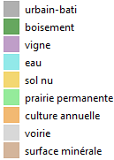

<!doctype html>
<html lang="en">
    <head>
        <meta charset="utf-8">
        <meta http-equiv="X-UA-Compatible" content="IE=edge">
        <meta name="viewport" content="initial-scale=1,user-scalable=no,maximum-scale=1,width=device-width">
        <meta name="mobile-web-app-capable" content="yes">
        <meta name="apple-mobile-web-app-capable" content="yes">
        <link rel="stylesheet" href="css/leaflet.css">
        <link rel="stylesheet" href="css/qgis2web.css"><link rel="stylesheet" href="css/fontawesome-all.min.css">
        <link rel="stylesheet" href="css/leaflet-measure.css">
        <style>
        html, body, #map {
            width: 100%;
            height: 100%;
            padding: 0;
            margin: 0;
        }
        </style>
    <title>Occupation du sol Grand Cognac 2019</title>
    </head>
    <body>
        <logo>
            <div id="logo">
            
            </div>
        </logo>
        <div id="map">
        </div>
        <script src="js/qgis2web_expressions.js"></script>
        <script src="js/leaflet.js"></script>
        <script src="js/leaflet.rotatedMarker.js"></script>
        <script src="js/leaflet.pattern.js"></script>
        <script src="js/leaflet-hash.js"></script>
        <script src="js/Autolinker.min.js"></script>
        <script src="js/rbush.min.js"></script>
        <script src="js/labelgun.min.js"></script>
        <script src="js/labels.js"></script>
        <script src="js/leaflet.wms.js"></script>
        <script src="js/leaflet-measure.js"></script>
        <script src="data/Grandcognac_1.js"></script>
        <script>
        var map = L.map('map', {
            zoomControl:true, maxZoom:17, minZoom:4
        }).fitBounds([[45.6776336758281,-0.3213763604498022],[45.71151185448976,-0.24628977814581843]]);
        var hash = new L.Hash(map);
        map.attributionControl.setPrefix('<a href="https://github.com/tomchadwin/qgis2web" target="_blank">qgis2web</a> &middot; <a href="http://leafletjs.com" title="A JS library for interactive maps">Leaflet</a>');
        var measureControl = new L.Control.Measure({
            position: 'topleft',
            primaryLengthUnit: 'meters',
            secondaryLengthUnit: 'kilometers',
            primaryAreaUnit: 'sqmeters',
            secondaryAreaUnit: 'hectares'
        });
        measureControl.addTo(map);
        document.getElementsByClassName('leaflet-control-measure-toggle')[0]
        .innerHTML = '';
        document.getElementsByClassName('leaflet-control-measure-toggle')[0]
        .className += ' fas fa-ruler';
        var bounds_group = new L.featureGroup([]);
        function setBounds() {
        }
        var layer_GoogleSatellite_0 = L.tileLayer('http://mt0.google.com/vt/lyrs=s&hl=en&x={x}&y={y}&z={z}', {
            opacity: 1.0,
            attribution: '',
        });
        layer_GoogleSatellite_0;
        map.addLayer(layer_GoogleSatellite_0);
        function pop_Grandcognac_1(feature, layer) {
            var popupContent = '<table>\
                    <tr>\
                        <td colspan="2">' + (feature.properties['id'] !== null ? Autolinker.link(String(feature.properties['id'])) : '') + '</td>\
                    </tr>\
                </table>';
            layer.bindPopup(popupContent, {maxHeight: 400});
        }

        function style_Grandcognac_1_0() {
            return {
                pane: 'pane_Grandcognac_1',
                opacity: 1,
                color: 'rgba(255,255,255,0.7019607843137254)',
                dashArray: '',
                lineCap: 'butt',
                lineJoin: 'miter',
                weight: 3.0, 
                fill: true,
                fillOpacity: 1,
                fillColor: 'rgba(255,255,255,0.0)',
            }
        }
        map.createPane('pane_Grandcognac_1');
        map.getPane('pane_Grandcognac_1').style.zIndex = 401;
        map.getPane('pane_Grandcognac_1').style['mix-blend-mode'] = 'normal';
        var layer_Grandcognac_1 = new L.geoJson(json_Grandcognac_1, {
            attribution: '',
            pane: 'pane_Grandcognac_1',
            onEachFeature: pop_Grandcognac_1,
            style: style_Grandcognac_1_0,
        });
        bounds_group.addLayer(layer_Grandcognac_1);
        map.addLayer(layer_Grandcognac_1);
        var layer_Occupationdessols2019_2 = L.WMS.layer("https://greencitylab.terranis.fr/geoserver/wms", "mtd:cognac_2019_classif_os_v20190920", {
            format: 'image/png',
            uppercase: true,
            transparent: true,
            continuousWorld : true,
            tiled: true,
            info_format: 'text/html',
            opacity: 1,
            identify: false,
            attribution: '',
        });
        map.addLayer(layer_Occupationdessols2019_2);
        var title = new L.Control();
        title.onAdd = function (map) {
            this._div = L.DomUtil.create('div', 'info');
            this.update();
            return this._div;
        };
        title.update = function () {
            this._div.innerHTML = '<h2><div align="right">Classification de l\'occupation des sols à partir d\'imagerie Sentinel<br><font size="-1">Projet Mon Territoire Demain | Grand Cognac | 2019</font></div></h2>';
        };
        title.addTo(map);
        var baseMaps = {};
        L.control.layers(baseMaps,{'Occupation des sols 2019<br> ': layer_Occupationdessols2019_2,' Grand cognac': layer_Grandcognac_1,"Google Satellite": layer_GoogleSatellite_0,},{collapsed:false}).addTo(map);
        setBounds();
        </script>
    </body>
</html>
